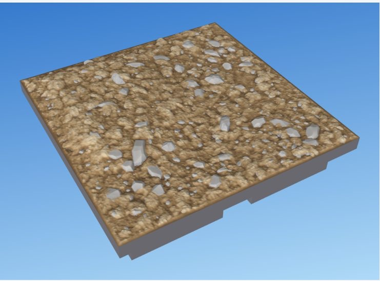

dharmatiles
dharmatiles turns a short text file into a 3D-printable terrain tile for tabletop games: ground, grass, rocks, cliffs, water, walls and trees, on a DungeonBlocks or OpenLOCK base, printable on a home FDM printer without supports. The file is a .dtile document in the tile language. This site is that language's reference.
A first tile
// my-pond.dtile
tile pond size="1x1" seed=97 {
line shore wobble=5 { through "0,0.38" "1,0.42" }
region pool { bounded-by shore; fill "0.5,0.25" }
region bank { bounded-by shore; fill "0.5,0.75" }
stack {
dirt in=bank
grass in=bank
ground in=pool level="water - 2.2"
scatter in=pool count=2 { rock size="6..10" }
water
}
}
lib:tiles/water/1x1-water+grass.dtile.A line divides the tile, regions name its sides, and the stack says what goes where: dirt and grass on the bank, a ground bed, two rocks and water in the pool. Sizes are millimetres at the 35 mm square; the OpenLOCK build scales them for you.
| To | Run |
|---|---|
| Build it (DungeonBlocks) | dharmatiles build my-pond.dtile → out/db/my-pond-db.stl |
| Build it for OpenLOCK, with preview images | dharmatiles build my-pond.dtile --system ol --png |
| Watch it in the browser as you edit | dharmatiles preview my-pond.dtile --open |
| Check it without building | dharmatiles check my-pond.dtile |
| Build every library tile | dharmatiles build --all --system both |
| List the elements and their controls | dharmatiles looks, dharmatiles looks cliff |
There are no prebuilt downloads yet: build the program from the repository with cargo build --release. Every tile passes a printability gate before it is written: watertight, nothing lost, no overhang past 55° (55–65° allowed in small patches, past 65° fails). See printing.
The reference
- The languageHow a document is written: syntax, units and levels, edges, points, lines and regions, placement, parts, and errors.
- ElementsEvery element a document can write, one page each: what it makes, screenshots, an example, every control (generated from the program), how it is made, reference photos and its design record.
- Composing a tileHow elements share a tile: rocks bedded in the ground, grass growing up to them, and tiles that meet their neighbours.
- Tile systemTile, square and cell; the DungeonBlocks and OpenLOCK bases; file names; edges.
- PrintingThe printer profile, the overhang limit, red overhangs in renders, and the audit every build passes.
Elements

dirt · groundBare earth with clods, grit and half-sunk pebbles over gentle rises. grass · flowers · reedsSeparate sculpted blades in tufts, parting round patches of bare earth.
grass · flowers · reedsSeparate sculpted blades in tufts, parting round patches of bare earth.
 rock · stone · boulder · pebbleChiselled stones, alone or scattered, bedded in the ground.
rock · stone · boulder · pebbleChiselled stones, alone or scattered, bedded in the ground.
 cliffA storey-high band or mass of broken rock, with scree at its foot.
cliffA storey-high band or mass of broken rock, with scree at its foot.
 waterSculpted water: swells off the shore and chop round rocks.
waterSculpted water: swells off the shore and chop round rocks.
 wall · floorCut stone, fieldstone and brick walls on a tile edge, and stone floors.
wall · floorCut stone, fieldstone and brick walls on a tile edge, and stone floors.
 All elementstile, levels, line, region, stack, use, define, scatter, the bases and the library files.
All elementstile, levels, line, region, stack, use, define, scatter, the bases and the library files.
Older renders on the element pages predate the rule that paints overhang faces red; each is captioned.
The project
The program
The dharmatiles program, in Rust: it reads .dtile documents, builds them, audits them and writes STL and 3MF.
- Code
crates/,library/- Docs
- Plan and decisions · Architecture · Preview · Spikes
- Status
- below
The labs
Standalone Python experiments where new looks are designed (grass, rocks, cliffs, water, shore, dirt, meadow) before each is ported into the program.
The Python library
The original generator, retired on 4 Nov 2026 (tag python-library-final). Its support library stays, frozen, for the labs.
- Docs
- Library design pages (archived)
- Status
- below
Status
Python library
Labs
Rust rewrite
Site and other
Rows come from status.json, which Claude commits as work moves.
Extras
- Paint organizer magnetsNot terrain: disc-magnet pockets in the hex paint organizer so copies clip together.
Archive
Everything that records how we got here: the Python library design pages, the Rust study's change log and notes, lab iteration logs, and the dated session history. It is frozen. Open the archive index, which says what each item was and what replaced it.